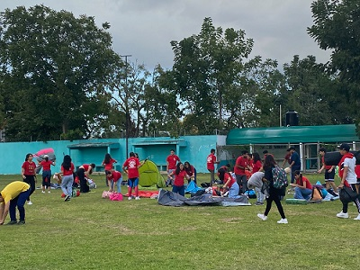

¿Que se vive en Bachilleres?
En el colegio de bachilleres plantel cancun Dos dia a dia los alumnos se mantienen en sus clases, pasan su horiario normal, pero hay ocasiones en los cuales estos mismos alumnos con sus acciones y decisiones estos mismos se puede observar los eventos especiales que se logran ver a lo largo de ele año asi con fines de ayudar y mostrar a la propia comunidad de cacun los avances de que el futuro de Mexico van haciendo poco a poco, asi podremos ver ejemplos como los siguientes.
El campamento
Hace poco tiempo se mostro un evento el cual se hico un mini campamento de un fin de semanas, los cuales se logro hacer varias actividades, con el fin de tener un ejercicio recreativo.
Dia de muertos
Con el, fin de demostrar el equipo de pintura hizo unos cuadros, los cuales se puede el observar las varias pinturas que los mismos alumnos se hacen, asi como un museo el cual los alumos y personas podian ir a observar